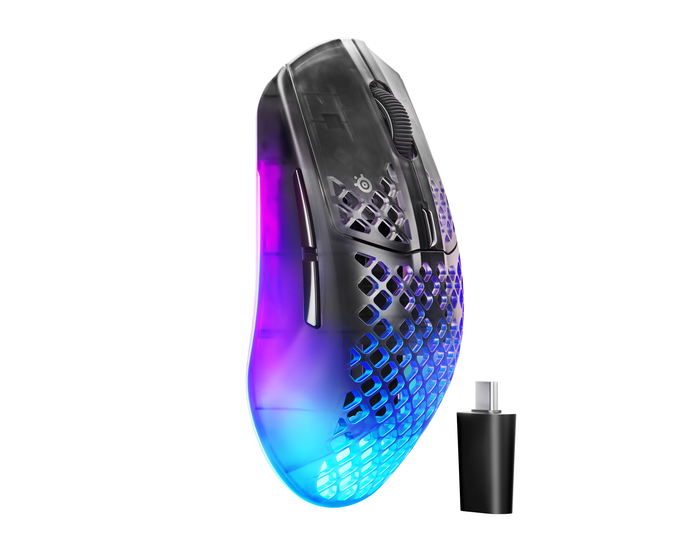

SteelSeries actualizó su línea de mice livianos con el Aerox 3 Wireless Gen 2, lanzado en abril de 2026 a USD 109.99. El salto más grande sobre el modelo anterior es el polling rate: pasa de 1K Hz al nuevo estándar de 4K Hz (4.000 Hz), lo que significa que el ratón actualiza su posición cuatro veces más rápido, con un tiempo de respuesta de 0.25ms en vez de 1ms.
Specs completas
El sensor cambia al TrueMove 26K, con 26.000 DPI máximo, 400 IPS de velocidad y 40G de aceleración. Pesa 68 gramos, tiene forma simétrica y seis botones programables. La certificación IP54 AquaBarrier protege contra salpicaduras y polvo, que es algo que los mice ultralivianos con diseño honeycomb suelen sacrificar.
En cuanto a conectividad, tiene doble wireless simultáneo: 2.4GHz para gaming competitivo (con el dongle) y Bluetooth 5.0 para conectar a otros dispositivos. La batería da 120 horas en 2.4GHz y hasta 200 horas en Bluetooth. Los switches mecánicos tienen rating de 80 millones de clicks.
Sale en tres colores: Shadow (negro), Ghost (blanco) y Magenta Haze (rosa/lila).
¿En qué mejora sobre el Aerox 3 Wireless original?
El Gen 1 era ya un buen mouse: ligero, buena autonomía y precio razonable. Pero el polling de 1K Hz empezó a quedar atrás a medida que la competencia pasó a 4K y 8K Hz. El Gen 2 cierra esa brecha de forma directa sin cambiar el precio de acceso. El sensor también es una generación más nuevo y más preciso en movimientos rápidos.
Lo que no cambia es el diseño ergonómico: sigue siendo simétrico, pensado para agarre claw o fingertip. Los que prefieren forma ergonómica para diestros (como el G Pro X Superlight 3 DEX de Logitech) van a tener que seguir mirando otro lado.
¿Para quién es?
Recomendado para: gamers competitivos que quieren un ratón ultraliviano e inalámbrico sin gastar más de USD 120. Ideal para Valorant, CS2 o cualquier shooter donde el peso y la latencia importan. También va bien para quien usa el mouse muchas horas seguidas y no quiere cargar cables.
No es para: los que prefieren forma ergonómica, los que necesitan 8K Hz de polling (hay opciones más caras para eso), ni los que buscan RGB prominente (este modelo es discreto en ese aspecto).
Comparación rápida con la competencia directa
Frente al Razer Viper V4 Pro (USD 159.99): el Razer tiene sensor 50K, 8K Hz y pesa 49g, pero cuesta USD 50 más. Si el presupuesto alcanza, el Viper gana en paper; si no, el Aerox 3 Gen 2 no decepciona. Frente al Logitech G Pro X Superlight 3 DEX (USD 159.99): el Logitech tiene forma ergonómica y es más liviano aún (55g), pero no tiene 4K Hz y solo en modelos recientes agregó Bluetooth. El Aerox 3 Gen 2 gana en precio y versatilidad de conectividad.
En el segmento de USD 100–120 inalámbrico, el Aerox 3 Wireless Gen 2 es una de las mejores opciones del momento. No lidera en ninguna especificación contra sus competidores de 150 dólares, pero no tiene que hacerlo: hace muy bien lo que promete al precio que cobra.